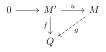
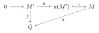
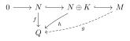
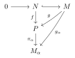
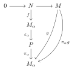
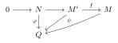
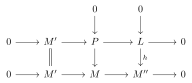
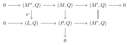
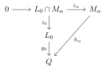

Original thesis: University of Bucharest, Faculty of
Mathematics, 1999
English translation: 2025-11-21
Definition 1.1. A non-zero \(R\)-module \(S\) is called simple if its only submodules are \(0\) and \(S\).
Proposition 1.2. Let \(S\) be an \(R\)-module. The following statements are equivalent:
\(S\) is simple;
for every non-zero element \(x \in S\) we have \(S = xR\);
\(S \cong R/I\), where \(I\) is a maximal right ideal.
Lemma 1.3 (Schur). Let \(S\) and \(S'\) be simple \(R\)-modules and let \(f\colon S \to S'\) be a homomorphism of \(R\)-modules. Then \(f = 0\) or \(f\) is an isomorphism. In particular \(\mathop{\mathrm{End}}_R(S)\) is a division ring.
Definition 1.4. Let \(M\) be an \(R\)-module and let \((S_i)_{i\in I}\) be the family of all simple submodules of \(M\). If \(M = \sum_{i\in I} S_i\), then \(M\) is called semisimple.
Proposition 1.5. Let \(M\) be a semisimple \(R\)-module and \(N\) a submodule of \(M\). Then there exists a subset \(J \subseteq I\) such that
the family \((S_j)_{j\in J}\) is independent;
\(M = N \oplus \bigl(\bigoplus_{j\in J} S_j\bigr)\).
Corollary 1.6. With the above notation, for the semisimple module \(M\) there exists \(J \subseteq I\) such that the family \((S_j)_{j\in J}\) is independent and \[M = \bigoplus_{i\in I} M_i.\]
Corollary 1.7. If \(M\) is a semisimple \(R\)-module and \(N\) a submodule of \(M\), then both \(N\) and \(M/N\) are semisimple.
Corollary 1.8. A direct sum of semisimple modules is a semisimple module.
Theorem 1.9. Let \(M\) be an \(R\)-module. The following statements are equivalent:
\(M\) is semisimple;
\(M\) is isomorphic to a direct sum of simple modules;
every submodule of \(M\) is a direct summand of \(M\);
every short exact sequence \[0 \longrightarrow M' \xrightarrow{\,f\,} M \xrightarrow{\,g\,} M'' \longrightarrow 0\] splits.
Definition 1.10. The sum of all simple submodules of \(M\) is called the socle of \(M\) and is denoted by \(\mathop{\mathrm{soc}}(M)\). If \(M\) has no simple submodule we put \(\mathop{\mathrm{soc}}(M) = 0\).
Proposition 1.11. Let \(M\) and \(N\) be \(R\)-modules and \(f\colon M \to N\) a homomorphism. Then \(f(\mathop{\mathrm{soc}}(M)) \subseteq \mathop{\mathrm{soc}}(N)\).
Proposition 1.12. Let \(M\) be an \(R\)-module and \(N\) a submodule of \(M\). Then \[\mathop{\mathrm{soc}}(N) = \mathop{\mathrm{soc}}(M) \cap N.\]
Proposition 1.13. If \(M = \bigoplus_{i\in I} M_i\), then \[\mathop{\mathrm{soc}}(M) = \bigoplus_{i\in I} \mathop{\mathrm{soc}}(M_i).\]
Proposition 1.14. Let \(R\) be a ring. Then the socle \(\mathop{\mathrm{soc}}(R_R)\) is a two-sided ideal of \(R\).
Definition 1.15. Let \(R\) be a ring and \(M\) a right \(R\)-module. We say that \(M\) satisfies the maximal condition (resp. the minimal condition) if every non-empty set of submodules of \(M\), ordered by inclusion, has a maximal (resp. minimal) element.
We say that \(M\) satisfies the ascending (resp. descending) chain condition if every ascending chain of submodules of \(M\) \[M_1 \subseteq M_2 \subseteq \cdots \subseteq M_i \subseteq \cdots\] (resp. every descending chain \[M_1 \supseteq M_2 \supseteq \cdots \supseteq M_i \supseteq \cdots\]) is stationary, that is, there exists \(n \ge 1\) such that \(M_n = M_{n+1} = \cdots\).
Proposition 1.16. Let \(M\) be an \(R\)-module. The following statements are equivalent:
\(M\) satisfies the maximal (minimal) condition;
\(M\) satisfies the ascending (descending) chain condition.
Definition 1.17. An \(R\)-module \(M\) is called noetherian (resp. artinian) if it satisfies the maximal (resp. minimal) condition. The ring \(R\) is called right noetherian (resp. right artinian) if the right module \(R_R\) is noetherian (resp. artinian).
Example 1.18.
\(\mathbb{Z}\) is a noetherian ring but not artinian.
Every finite group is a noetherian and artinian \(\mathbb{Z}\)-module.
Every finite ring is noetherian and artinian.
The ring \(\mathbb{Z}[X_1,X_2,\ldots,X_n,\ldots]\) is neither noetherian nor artinian: \[(X_1) \subsetneq (X_1,X_2) \subsetneq \cdots \subsetneq (X_1,\ldots,X_n) \subsetneq \cdots\] \[(X_1) \supsetneq (X_1^2) \supsetneq \cdots \supsetneq (X_1^k) \supsetneq \cdots\]
The Prüfer \(p\)-group \(\mathbb{Z}_{p^\infty}\) is an artinian but not noetherian \(\mathbb{Z}\)-module.
Proposition 1.19. Let \(N\) and \(P\) be submodules of \(M\) such that \(M = N + P\). Then \(M\) is noetherian (artinian) if and only if \(N\) and \(P\) are noetherian (artinian).
Proposition 1.20. For an \(R\)-module \(M\) the following statements are equivalent:
\(M\) is noetherian;
every submodule of \(M\) is finitely generated.
Proposition 1.21. For an \(R\)-module \(M\) the following statements are equivalent:
\(M\) is artinian;
for every family \((X_i)_{i\in I}\) of submodules of \(M\) there exists a finite subset \(J \subseteq I\) such that \[\bigcap_{i\in I} X_i = \bigcap_{j\in J} X_j.\]
Definition 1.22. Let \(M\) be a non-zero right \(R\)-module. A composition series or Jordan–Hölder series of \(M\) is a finite strictly ascending chain of submodules \[0 = X_0 \subset X_1 \subset \cdots \subset X_n = M\] such that \(X_{i+1}/X_i\) is a simple module for \(0 \le i \le n-1\). The integer \(n\) is called the length of the series, and the modules \(X_{i+1}/X_i\) are called its factors.
Proposition 1.23. Let \(M\) be an \(R\)-module. The following statements are equivalent:
\(M\) has a composition series;
\(M\) is noetherian and artinian.
Proposition 1.24. Let \[0 \longrightarrow M' \longrightarrow M \longrightarrow M'' \longrightarrow 0\] be a short exact sequence of right \(R\)-modules. Then \(M\) has a composition series if and only if both \(M'\) and \(M''\) have composition series.
If \[0 = M_0 \subseteq M_1 \subseteq \cdots \subseteq M_n = M,\qquad 0 = N_0 \subseteq N_1 \subseteq \cdots \subseteq N_p = M\] are two composition series of \(M\), we say that they are equivalent if \(n = p\) and there exists a bijection \(\sigma : \{0,\ldots,n-1\} \to \{0,\ldots,n-1\}\) such that \[M_{i+1}/M_i \cong M_{\sigma(i)+1}/M_{\sigma(i)} \quad (0 \le i \le n-1).\]
Theorem 1.25 (Jordan–Hölder). If an \(R\)-module \(M\) has two composition series \[0 = M_0 \subseteq M_1 \subseteq \cdots \subseteq M_n = M,\qquad 0 = N_0 \subseteq N_1 \subseteq \cdots \subseteq N_p = M,\] then these two series are equivalent.
Definition 1.26. An \(R\)-module \(M\) which admits a composition series is called a module of finite length. The length of its composition series is called the length of \(M\) and is denoted by \(l(M)\). If \(M\) admits no composition series, we say that \(M\) has infinite length and we write \(l(M)=\infty\).
Proposition 1.27. Let \[0 \longrightarrow M' \longrightarrow M \longrightarrow M'' \longrightarrow 0\] be a short exact sequence of \(R\)-modules of finite length. Then \[l(M) = l(M') + l(M'').\]
Corollary 1.28. Let \(M\) be an \(R\)-module of finite length and let \(N,L\) be submodules of \(M\). Then:
\(l(M) = l(N) + l(M/N)\);
\(l(N+L) + l(N\cap L) = l(N) + l(L)\).
Corollary 1.29. Let \(M\) be an \(R\)-module of finite length and let \(M_1,M_2,\ldots,M_n\) be submodules of \(M\) such that \[M = M_1 \oplus M_2 \oplus \cdots \oplus M_n.\] Then \[l(M) = \sum_{i=1}^{n} l(M_i).\]
Definition 1.30. Let \(M\) be an \(R\)-module. The intersection of all maximal submodules of \(M\) is called the Jacobson radical of \(M\) and is denoted by \(\mathop{\mathrm{Rad}}(M)\). If \(M\) has no maximal submodules, we adopt the convention \(\mathop{\mathrm{Rad}}(M)=M\).
Remark 1.31. If \(M\) is a finitely generated \(R\)-module, then \(\mathop{\mathrm{Rad}}(M)\ne M\).
Proposition 1.32. Let \(M\) be an \(R\)-module. Then \[\mathop{\mathrm{Rad}}(M) = \bigcap_{\substack{f : M \to S\\ S\ \text{simple}}} \ker(f) = \bigcap_{\substack{f : M \to X\\ X\ \text{semisimple}}} \ker(f).\]
Proposition 1.33. Let \(f : M \to N\) be a homomorphism of \(R\)-modules. Then \(f(\mathop{\mathrm{Rad}}(M)) \subseteq \mathop{\mathrm{Rad}}(N)\). If, in addition, \(f\) is an epimorphism and \(\ker(f) \subseteq \mathop{\mathrm{Rad}}(M)\), then \(f(\mathop{\mathrm{Rad}}(M)) = \mathop{\mathrm{Rad}}(N)\).
Corollary 1.34. For every \(R\)-module \(M\) we have \(\mathop{\mathrm{Rad}}(M/\mathop{\mathrm{Rad}}(M)) = 0\).
Corollary 1.35. If \(M\) is a semisimple \(R\)-module, then \(\mathop{\mathrm{Rad}}(M)=0\).
Corollary 1.36. If \(M = \bigoplus_{i\in I} M_i\), then \[\mathop{\mathrm{Rad}}(M) = \bigoplus_{i\in I} \mathop{\mathrm{Rad}}(M_i).\]
Proposition 1.37. Let \(M\) be an \(R\)-module with \(\mathop{\mathrm{Rad}}(M)\ne M\). Then \[\mathop{\mathrm{Rad}}(M) = \bigcap \{\,L \le M \mid L \text{ is a superfluous submodule}\,\}.\]
Proposition 1.38 (Nakayama’s Lemma). Let \(M\) be a finitely generated \(R\)-module and \(N\) a submodule of \(M\). If \(N + \mathop{\mathrm{Rad}}(M) = M\), then \(N = M\). (In other words, \(\mathop{\mathrm{Rad}}(M)\) is the largest superfluous submodule of \(M\).)
Let \(R\) be a ring. We consider the left ideal \(\mathop{\mathrm{Rad}}({}_R R)\), the intersection of all maximal left ideals of \(R\), and the right ideal \(\mathop{\mathrm{Rad}}(R_R)\), the intersection of all maximal right ideals of \(R\).
Proposition 1.39.
\(\mathop{\mathrm{Rad}}(R_R)\) is a two-sided ideal.
\(\mathop{\mathrm{Rad}}(R_R) = \{\,r \in R \mid 1-ar \in U(R)\ \text{for all } a \in R\,\}\).
\(\mathop{\mathrm{Rad}}(R_R) = \mathop{\mathrm{Rad}}({}_R R)\).
Definition 1.40. The two-sided ideal \(\mathop{\mathrm{Rad}}(R_R) = \mathop{\mathrm{Rad}}({}_R R)\) is called the Jacobson radical of the ring \(R\) and is denoted by \(\mathop{\mathrm{Rad}}(R)\).
Proposition 1.41.
If \(J\) is a left (resp. right or two-sided) ideal such that \(1-x\) is invertible for every \(x \in J\), then \(J \subseteq \mathop{\mathrm{Rad}}(R)\).
If \(J\) is a nil left (resp. right or two-sided) ideal, then \(J \subseteq \mathop{\mathrm{Rad}}(R)\).
Proposition 1.42. Let \(\varphi : R \to S\) be a surjective ring homomorphism. Then \(\varphi(\mathop{\mathrm{Rad}}(R)) \subseteq \mathop{\mathrm{Rad}}(S)\). If \(\ker(\varphi) \subseteq \mathop{\mathrm{Rad}}(R)\), then \(\varphi(\mathop{\mathrm{Rad}}(R)) = \mathop{\mathrm{Rad}}(S)\).
Proposition 1.43. If \((R_i)_{i\in I}\) is a family of rings, then \[\mathop{\mathrm{Rad}}\Bigl(\prod_{i\in I} R_i\Bigr) = \prod_{i\in I} \mathop{\mathrm{Rad}}(R_i).\]
Proposition 1.44. Let \(M\) be an \(R\)-module. Then \(M\,\mathop{\mathrm{Rad}}(R) \subseteq \mathop{\mathrm{Rad}}(M)\).
Theorem 1.45. If \(R\) is an artinian ring, then \(\mathop{\mathrm{Rad}}(R)\) is nilpotent.
Theorem 1.46. For a ring \(R\) the following statements are equivalent:
every non-zero right \(R\)-module is semisimple;
\(R\) as a right \(R\)-module is semisimple;
\(R\) is artinian and \(\mathop{\mathrm{Rad}}(R)=0\).
Definition 1.47. A ring \(R\) satisfying any (hence all) of the above conditions is called a semisimple ring.
Proposition 1.48. Let \(R\) be a semisimple ring and \(M\) a non-zero \(R\)-module. The following statements are equivalent:
\(M\) has finite length;
\(M\) is noetherian;
\(M\) is artinian.
Theorem 1.49. Let \(R\) be a right artinian ring and \(M\) a non-zero right \(R\)-module. The following statements are equivalent:
\(M\) has finite length;
\(M\) is noetherian;
\(M\) is artinian.
Corollary 1.50 (Hopkins). A right artinian ring (respectively a left artinian ring) is right noetherian (respectively left noetherian).
Definition 2.1. Let \(M\) be a right \(R\)-module. A submodule \(N\) of \(M\) is called essential (or we say that \(M\) is an essential extension of \(N\)) if \(N \cap N' \ne 0\) for every non-zero submodule \(N'\) of \(M\). In this case we write \(N \trianglelefteq M_R\).
A homomorphism of right \(R\)-modules \(f : M \to N\) is called essential if \(\operatorname{Im} f\) is an essential submodule of \(N\) (i.e. \(\operatorname{Im} f \trianglelefteq N_R\)).
Example 2.1.
\(n\mathbb{Z} \trianglelefteq\mathbb{Z}_\mathbb{Z}\) for every \(n \ge 1\).
Every submodule of the Prüfer group \(\mathbb{Z}_{p^\infty}\) is essential.
Remark 2.2. Let \(M\) be a right \(R\)-module and \(N\) a submodule of \(M\). Then \(N \trianglelefteq M_R\) if and only if for every \(x \in M\), \(x \ne 0\), there exists \(r \in R\) such that \(xr \in N \setminus \{0\}\).
Proof. “\(\Rightarrow\)” Let \(x \in M \setminus \{0\}\). Since \(0 \ne xR \le M_R\) and \(N \trianglelefteq M_R\), we have \(xR \cap N \ne 0\); hence there exists \(r \in R\) with \(xr \in N \setminus \{0\}\).
“\(\Leftarrow\)” Let \(N' \le M_R\), \(N' \ne 0\). For every \(x \in N' \setminus \{0\}\) there exists \(r \in R\) such that \(xr \in N \setminus \{0\}\), so \(N \cap N' \ne 0\). Thus \(N \trianglelefteq M_R\). ◻
Definition 2.3. A monomorphism of right \(R\)-modules \(f : N_R \to M_R\) is called essential if \(\operatorname{Im} f \trianglelefteq M_R\). It is immediate that, if \(N\) is a submodule of \(M\), then the canonical inclusion \(i_N : N \to M\) is an essential monomorphism if and only if \(N \trianglelefteq M_R\).
Proposition 2.4. A monomorphism \(f : N_R \to M_R\) is essential if and only if for every right \(R\)-module \(M'\) and every \(g \in \mathop{\mathrm{Hom}}(M,M')\), the fact that \(g \circ f\) is a monomorphism implies that \(g\) is a monomorphism.
Proof. “\(\Rightarrow\)” Let \(g\) be as in the statement and suppose that \(g \circ f\) is a monomorphism. Assume \(\mathop{\mathrm{Ker}}g \ne 0\). Take \(x \in \mathop{\mathrm{Ker}}g \cap \operatorname{Im} f \setminus \{0\}\). Then \(x = f(x')\) for some \(x' \in N\) and \(g(x)=0\), so \(g(f(x')) = 0\). Since \(g \circ f\) is a monomorphism, it follows that \(x' = 0\) and hence \(x = 0\), a contradiction.
“\(\Leftarrow\)” If \(f\) is not an essential monomorphism, then there exists \(N' \le M_R\), \(N' \ne 0\), such that \(N' \cap \operatorname{Im} f = 0\). Consider the canonical projection \(\pi_{N'} : M \to M/N'\). If \(x \in \mathop{\mathrm{Ker}}(\pi_{N'} \circ f)\), then \(f(x) \in N'\), so \(f(x) = 0\), hence \(x = 0\). Thus \(\pi_{N'} \circ f\) is injective. By the hypothesis in the statement, this implies that \(\pi_{N'}\) is injective, so \(N' = 0\), a contradiction. ◻
Corollary 2.5. Let \(M\) be a right \(R\)-module and \(N \le M_R\). Then the following statements are equivalent:
\(N \trianglelefteq M_R\);
the inclusion \(i_N : N \to M\) is an essential monomorphism;
for every \(f \in \mathop{\mathrm{Hom}}(M,M')\), with \(M'\) an arbitrary \(R\)-module, the fact that \(f \circ i_N\) is a monomorphism implies that \(f\) is a monomorphism.
Proposition 2.6. Let \(f : N_R \to M_R\) and \(g : M_R \to P_R\) be monomorphisms. Then \(g \circ f\) is essential if and only if both \(g\) and \(f\) are essential.
Proof. “\(\Leftarrow\)” Let \(z \in P \setminus \{0\}\). Since \(g\) is essential, there exists \(r \in R\) such that \(zr \in \operatorname{Im} g \setminus \{0\}\). Thus there exists \(y \in M \setminus \{0\}\) with \(zr = g(y)\). As \(f\) is essential, there exists \(r' \in R\) such that \(y r' \in \mathrm{Im}\, f \setminus \{0\}\). Hence there exists \(x \in N \setminus \{0\}\) with \(y r' = f(x)\). But \(z r' = g(y) r' = g(y r') = g(f(x))\). If \(z r' = 0\), then \(g(f(x)) = 0\), hence \(x = 0\), a contradiction. Therefore \(z r' \in \mathrm{Im}(g \circ f)\) and \(z r' \neq 0\), which shows that \(g \circ f\) is essential.
“\(\Rightarrow\)” Let \(y \in M \setminus \{0\}\). Since \(g\) is a monomorphism, \(g(y) \neq 0\). Thus there exists \(r \in R\) such that \(g(yr) \in \mathrm{Im}\, g \setminus \{0\}\) and \(g(yr) \neq 0\). Hence there exists \(x \in N \setminus \{0\}\) such that \(g(yr) = g(f(x))\), therefore \(yr = f(x) \in \mathrm{Im}\, f\), which shows that \(f\) is an essential monomorphism.
If \(z \in P \setminus \{0\}\), there exists \(r \in R\) such that \(z r \in \mathrm{Im}(g \circ f)\) and \(z r \neq 0\). Since \(\mathrm{Im}(g \circ f) \subseteq \mathrm{Im}\, g\), we obtain \(z r \in \mathrm{Im}\, g\), so \(g\) is essential. ◻
Proposition 2.7. Let \(M\) be a right \(R\)-module and \(L_1, L_2, \ldots, L_n\) submodules of \(M\). Then:
1) \(\displaystyle \bigcap_{i=1}^n L_i\) is essential in \(M\) iff each \(L_i\) is essential in \(M\).
2) If \(L_1 \subseteq L_2\) and \(L_1\) is essential in \(M\), then \(L_2\) is essential in \(M\).
The proof is obvious.
Proposition 2.8. Let \(K\) and \(L\) be submodules of \(M\).
1) If \(K \subseteq L \subseteq M\), then \(K \, \trianglelefteq\, M\) iff \(K \, \trianglelefteq\, L\) and \(L \, \trianglelefteq\, M\).
2) If \(h : K_R \to M_R\) is a module morphism and \(L \, \trianglelefteq\, M\), then \(h^{-1}(L) \, \trianglelefteq\, K\).
3) If \(L_1, L_2 \leq M_R\) with \(K_1 \, \trianglelefteq\, L_1\) and \(K_2 \, \trianglelefteq\, L_2\), then \(K_1 \cap K_2 \, \trianglelefteq\, L_1 \cap L_2\).
Proof.
1) Apply 1.5 and 1.6.
2) Let \(U\) be a non-zero submodule of \(K\).
(i) If \(h(U) = 0\), then \(U \subseteq \ker h \subseteq h^{-1}(L)\), so \(U \cap h^{-1}(L) \neq 0\).
(ii) If \(h(U) \neq 0\), then \(h(U) \cap L \neq 0\). Hence there exists \(u \in U\) with \(h(u) \in L\), \(h(u) \neq 0\), so \(u \in U \cap h^{-1}(L)\) and \(u \neq 0\).
Thus \(h^{-1}(L) \, \trianglelefteq\, K\).
3) Let \(0 \neq X \leq L_1 \cap L_2\). Then \(X \subseteq L_1\), so \(0 \neq X \cap K_1 \leq L_1\). But \(X \subseteq L_2\) implies \(0 \neq (X \cap K_1) \cap L_2 = X \cap (K_1 \cap K_2)\). Hence \(K_1 \cap K_2 \, \trianglelefteq\, L_1 \cap L_2\).
Proposition 2.9. Let \((K_\lambda)_{\lambda \in \Lambda}\), \((L_\lambda)_{\lambda \in \Lambda}\) be families of submodules of \(M\). If \((K_\lambda)\) is independent in \(M\) and \(K_\lambda \, \trianglelefteq\, L_\lambda\) for all \(\lambda \in \Lambda\), then \((L_\lambda)\) is independent in \(M\) and \[\left(\bigoplus_{\lambda \in \Lambda} K_\lambda\right) \, \trianglelefteq\, \left(\bigoplus_{\lambda \in \Lambda} L_\lambda\right).\]
Proof.
Let \(K_1 \, \trianglelefteq\, L_1\), \(K_2 \, \trianglelefteq\, L_2\) with \(K_1 \cap K_2 = 0\). By 1.8(3), \(0 \, \trianglelefteq\, L_1 \cap L_2\), hence \(L_1 \cap L_2 = 0\).
Let \(\pi_1 : L_1 \oplus L_2 \to L_1\), \(\pi_2 : L_1 \oplus L_2 \to L_2\) be the canonical projections. Since \(K_1 \, \trianglelefteq\, L_1\) and \(K_2 \, \trianglelefteq\, L_2\),
\[\pi_1^{-1}(K_1) = K_1 \oplus 0 \, \trianglelefteq\, L_1 \oplus L_2,\] and \[\pi_2^{-1}(K_2) = 0 \oplus K_2 \, \trianglelefteq\, L_1 \oplus L_2.\]
Hence \[K_1 \oplus K_2 = \pi_1^{-1}(K_1) \cap \pi_2^{-1}(K_2) \, \trianglelefteq\, L_1 \oplus L_2.\]
Induction gives the finite case. For the general case, let \(0 \neq m \in \oplus_{\lambda \in \Lambda} L_\lambda\). Then \(m\) lies in a finite direct sum \(\oplus_{\lambda \in \Lambda_0} L_\lambda\) for some finite \(\Lambda_0 \subseteq \Lambda\). Since \((\oplus_{\lambda \in \Lambda_0} K_\lambda) \, \trianglelefteq\, (\oplus_{\lambda \in \Lambda_0} L_\lambda)\), there exists \(r \in R\) with \(rm \in (\oplus_{\lambda \in \Lambda_0} K_\lambda) \setminus \{0\} \subseteq (\oplus_{\lambda \in \Lambda} K_\lambda)\). Thus \[\left(\bigoplus_{\lambda \in \Lambda} K_\lambda\right) \, \trianglelefteq\, \left(\bigoplus_{\lambda \in \Lambda} L_\lambda\right).\]
Proposition 2.10. Let \(N\) be a submodule of \(M\). Then there exists a submodule \(Q\) with \(N \subseteq Q \subseteq M\) such that \(Q\) is a maximal essential extension of \(N\) inside \(M\).
Proof.
Let \[\mathfrak{S} = \{ L \leq M \; ;\; N \subseteq L \subseteq M,\; N \, \trianglelefteq\, L \},\] ordered by inclusion. Clearly \(\mathfrak{S} \neq \varnothing\), since \(N \in \mathfrak{S}\).
Let \((L_\lambda)_{\lambda \in \Lambda}\) be a totally ordered family of elements of \(\mathfrak{S}\) and put \[L := \bigcup_{\lambda \in \Lambda} L_\lambda.\] Clearly \(L \leq M_R\).
Let \(x \in L \setminus \{0\}\). Then there exists \(\lambda_0 \in \Lambda\) with \(x \in L_{\lambda_0}\). Since \(N\) is essential in \(L_{\lambda_0}\), there exists \(r \in R\) such that \(xr \in N\) and \(xr \neq 0\), hence \(L\) is an essential extension of \(N\). Thus \(\mathfrak{S}\) is inductive and, by Zorn’s lemma, \(\mathfrak{S}\) admits a maximal element \(Q\) which satisfies the required conditions.
Definition 2.11. Let \(M\) be a right \(R\)-module and \(N \leq M_R\). A submodule \(K \leq M_R\) is called a complement of \(N\) in \(M\) if \(K\) is a maximal submodule of \(M\) with the property that \(K \cap N = 0\). A submodule \(K \leq M_R\) is called a complement submodule of \(M\) if there exists \(N \leq M_R\) such that \(K\) is a complement of \(N\) in \(M\).
Remark 2.12. The set \[\widetilde{\mathfrak{S}} = \{\,L \leq M_R \mid N \cap L = 0\,\}\] is inductive and, by applying Zorn’s lemma, it follows that there exists a complement of \(N\) in \(M\). In particular, \(0\) and \(M\) are complement submodules of \(M\).
Proposition 2.13. Let \(M_R\), \(N \leq M_R\) and \(K \leq M_R\), with \(K\) a complement of \(N\) in \(M\). There exists a complement \(Q\) of \(K\) in \(M\) such that \(N \subseteq Q\). Moreover, \(Q\) is a maximal essential extension of \(N\) in \(M\).
Proof. It is easy to see that the set \[\widetilde{\mathfrak{S}} = \{\,L \leq M_R \mid K \cap L = 0,\; N \subseteq L\,\}\] is inductive, and Zorn’s lemma guarantees the existence of \(Q\).
Let \(L\) be a non-zero submodule of \(Q\) such that \(L \cap N = 0\). Put \(K_1 = L + K\). Clearly \(K \subseteq K_1\). If \(x \in N \cap (L + K)\), then \(x = y + z\) with \(y \in L\), \(z \in K\). But \(z = x - y \in Q\). Since \(Q \cap K = 0\), we obtain \(z = 0\) and hence \(x = y\). From \(L \cap N = 0\) it follows that \(x = y = 0\), and therefore \(N \cap (L + K) = 0\), which contradicts the fact that \(K\) is a complement of \(N\) in \(M\). Thus \(L \cap N \neq 0\) for every \(0 \neq L \leq Q\), so \(Q\) is an essential extension of \(N\).
Suppose that there exists \(Q' \leq M_R\) with \(N \trianglelefteq Q'\) and \(Q \subsetneq Q'\). Since \(Q'\) is a complement of \(K\), we have \(Q' \cap K \neq 0\). But \(N \cap (Q' \cap K) = 0\) and \(0 \neq Q' \cap K \leq Q'\), contradicting \(N \trianglelefteq Q'\). Hence \(Q\) is a maximal essential extension of \(N\) in \(M\). ◻
Definition 2.14. A submodule \(N\) of \(M_R\) is called closed if \(N\) has no proper (meaning different from \(N\)) essential extension in \(M\).
Corollary 2.15. Let \(M_R\) be a right \(R\)-module. The complement submodules of \(M\) coincide with the closed submodules of \(M\).
Proof. From 1.13 it follows immediately that every closed submodule of \(M\) is a complement submodule of \(M\).
Conversely, let \(K\) be a complement submodule of \(M_R\). Then there exists \(N \leq M_R\) such that \(K\) is a complement of \(N\) in \(M\). Assume that \(K\) has a proper essential extension in \(M\); that is, there exists \(K' \leq M_R\) with \(K \trianglelefteq K'\) and \(K \subsetneq K'\). By the maximality of \(K\) we have \(K' \cap N \neq 0\), and since \(K \trianglelefteq K'\), it follows that \[K \cap K' \cap N \neq 0,\] contradiction. ◻
Corollary 2.16. Let \(N\) be a submodule of \(M_R\). If \(K\) is a complement of \(N\) in \(M\), then:
\((N + K) \trianglelefteq M_R\).
The canonical morphism \(\pi_K \circ i_N : N \to M/K\) is an essential monomorphism.
Proof. (1) Let \(x \in M \setminus \{0\}\). If \(x \notin K\), then \(K + Rx \neq K\) and hence \(N \cap (K + Rx) \neq 0\). Let \(y \in N \cap (K + Rx)\), \(y \neq 0\). There exist \(z \in K\) and \(r \in R\) such that \(y = z + rx\). If \(rx = 0\), then \(y = z\) and, since \(N \cap K = 0\), we obtain \(y = 0\), a contradiction. Thus \(rx \neq 0\) and, because \(rx = y - z\), we have \(rx \in N + K\), which shows that \((N + K) \trianglelefteq M_R\).
(2) We have \(\mathrm{Im}(\pi_K \circ i_N) = (N + K)/K\). Let \(L/K\) be a non-zero submodule of \(M/K\). Then \[\frac{N + K}{K} \cap \frac{L}{K} = \frac{(N + K) \cap L}{K} = \frac{N \cap L + K}{K}.\] Since \(K\) is a complement of \(N\), we have \(N \cap L \neq 0\), and hence \[\frac{N \cap L + K}{K} \neq 0,\] which shows that \(\pi_K \circ i_N\) is an essential monomorphism. ◻
Let \(Q\) and \(M\) be two right \(R\)-modules. We say that \(Q\) is \(M\)-injective if for every monomorphism \(u : M' \to M\) and every morphism \(f : M' \to Q\), there exists \(g : M \to Q\) such that \(g \circ u = f\); that is, the diagram

is commutative.
This property is equivalent to the condition that the map \[\mathop{\mathrm{Hom}}(u,Q) : \mathop{\mathrm{Hom}}(M,Q) \longrightarrow \mathop{\mathrm{Hom}}(M',Q)\] is surjective for every monomorphism \(u : M' \to M\). Since the functor \(\mathop{\mathrm{Hom}}(-,Q)\) is left exact, it follows that \(Q\) is \(M\)-injective if and only if \(\mathop{\mathrm{Hom}}(-,Q)\) is exact with respect to every short exact sequence of the form \[0 \longrightarrow M' \longrightarrow M \longrightarrow M'' \longrightarrow 0.\]
The \(R\)-module \(Q\) is called quasi-injective (or self-injective) if it is \(Q\)-injective. If \(Q\) is \(M\)-injective for every \(R\)-module \(M\), then \(Q\) is called injective.
2.1.1 Proposition
Proposition 3.1. Let \(Q\) and \(M\) be two \(R\)-modules. The following statements are equivalent:
\(Q\) is \(M\)-injective.
For every submodule \(N\) of \(M\) and every morphism \(f : N \to Q\), there exists \(g : M \to Q\) such that \(g_{\mid N} = f\).
For every essential submodule \(N\) of \(M\) and every morphism \(f : N \to Q\), there exists \(g : M \to Q\) such that \(g_{\mid N} = f\).
Proof. Implications \((1) \Rightarrow (2)\) and \((2) \Rightarrow (3)\) are obvious.
\((2) \Rightarrow (1)\). Let \(M'_R\), \(0 \longrightarrow M' \xrightarrow{u} M\) and \(f : M' \to Q\). Then \(u(M') \leq M\). Consider \(i : u(M') \to M\) the canonical injection and \(\bar{u} : M' \to u(M')\) the isomorphism induced by \(u\). There exists \(g : M \to Q\) such that \(g \circ i = f \circ \bar{u}^{-1}\). Hence \[g \circ i \circ \bar{u} = f \quad\text{and therefore}\quad g \circ u = f.\] 
\((3) \Rightarrow (2)\). Let \(N\) be a submodule of \(M\) and \(K\) a complement of \(N\) in \(M\). Then \((N \oplus K) \trianglelefteq M\). Define \(h : N \oplus K \to Q\) by \(h(n+k) = f(n)\) for all \(n \in N\), \(k \in K\). Since \(N \cap K = 0\), the map \(h\) is well-defined. There exists \(g : M \to Q\) such that \(g_{\mid N \oplus K} = h\), and hence \(g_{\mid N} = h_{\mid N} = f\).
 ◻
Proposition 3.2. Let \((M_\alpha)_{\alpha \in \Lambda}\) be a family of \(R\)-modules and \(M\) an \(R\)-module. Then \(\displaystyle \prod_{\alpha \in \Lambda} M_\alpha\) is \(M\)-injective if and only if each \(M_\alpha\) is \(M\)-injective.
Proof. Let \(N\) be a submodule of \(M\). Put \(P = \displaystyle\prod_{\alpha \in \Lambda} M_\alpha\) and let \(\pi_\alpha : P \to M_\alpha\) be the canonical projections for all \(\alpha \in \Lambda\).
\("\Leftarrow"\) Given a morphism \(f : N \to P\), the morphisms \(\pi_\alpha \circ f : N \to M_\alpha\) can be extended to \(g_\alpha : M \to M_\alpha\). There exists \(g : M \to P\) such that \(g_{\mid N} = f\).

\("\Rightarrow"\) Let \(\forall \alpha \in \Lambda\) and \(f : N \to M_\alpha\). Considering the canonical inclusion \(\varepsilon_\alpha : M_\alpha \to P\), since \(P\) is \(M\)-injective, there exists \(g : M \to P\) which extends \(\varepsilon_\alpha \circ f : N \to P\). Then \(\varepsilon_\alpha : M_\alpha \to P\) extends \(f\) and hence \(M_\alpha\) is \(M\)-injective.
 ◻
Corollary 3.3.
Let \((Q_\alpha)_{\alpha \in \Lambda}\) be a family of \(R\)-modules. Then \(\prod_{\alpha \in \Lambda} Q_\alpha\) is injective if and only if each \(Q_\alpha\) is injective for every \(\alpha\in\Lambda\).
The module \(Q_1 \oplus Q_2\) is an injective \(R\)-module if and only if each \(Q_i\) is injective for \(i=1,2\). In particular, a direct summand of an injective module is injective.
Proposition 3.4. Let \(Q\) be an \(R\)-module.
If \(0 \to M' \xrightarrow{f} M \xrightarrow{g} M'' \to 0\) is an exact sequence of \(R\)-modules and \(Q\) is \(M\)-injective, then \(Q\) is \(M'\)-injective and \(M''\)-injective.
If \((M_\alpha)_{\alpha \in \Lambda}\) is a family of submodules of \(M\) such that \(M = \sum_{\alpha\in\Lambda} M_\alpha\) and \(Q\) is \(M_\alpha\)-injective for every \(\alpha\), then \(Q\) is \(M\)-injective.
Let \((N_\alpha)_{\alpha\in\Lambda}\) be a family of \(R\)-modules. Then \(Q\) is \(\bigoplus_{\alpha\in\Lambda} N_\alpha\)-injective if and only if \(Q\) is \(N_\alpha\)-injective for every \(\alpha\in\Lambda\).
Proof. To show that \(Q\) is \(M'\)-injective, we consider \(N\) a submodule of \(M'\) and \(\varphi : N \rightarrow Q\) a morphism of \(R\)-modules. Since \(Q\) is \(M\)-injective, there exists \(\phi : M \to Q\) such that \(g \circ f\!\mid_{N} = \varphi\), and hence \(\psi \circ f : M' \to Q\) is a morphism which extends \(\varphi\).

Let \(h : L \to M''\) be a monomorphism. We may assume, without loss of generality, that \(M' \le M\) and \(M'' = M / M'\). Since \(L \cong h(L) \le M''\), there exist \(P \le M\), \(M' \subseteq P\) such that \(h(L) = P / M'\) and hence \(L \cong P/M'\). We obtain the commutative diagram:

Since \(Q\) is \(M\)-injective, applying the functor \(\mathop{\mathrm{Hom}}(-,Q)\) we obtain the commutative diagram:

We obtain that \(h^{*} = \mathop{\mathrm{Hom}}(h,Q)\) is an epimorphism, which shows that \(Q\) is \(M''\)-injective.
2) Let \(N\) be a submodule of \(M\) and \(f : N \to Q\) a morphism of \(R\)-modules. Consider the set \[\mathfrak{S} = \{(L,h) \mid N \le L \le M,\; h : L \to Q,\; h\!\mid_{N} = f\}.\] Since \((N,f) \in \mathfrak{S}\), we have \(\mathfrak{S} \ne \varnothing\). Define on \(\mathfrak{S}\) the order relation \((L_1,h_1) \preccurlyeq (L_2,h_2)\) if and only if \(L_1 \le L_2\) and \(h_2\!\mid_{L_1} = h_1\). One checks that \(\mathfrak{S}\) is inductive and, by Zorn’s lemma, there exists a maximal element \((L_0,g_0)\) of \(\mathfrak{S}\). To show that \(L_0 = M\) it is enough to prove that \(M_\alpha \le L_0\) for every \(\alpha \in \Lambda\).
Consider the diagram 
from which it follows that there exists \(h_\alpha : M_\alpha \to Q\) such that \(h_\alpha \circ i_\alpha = g_0 \circ i_\alpha\). Define \(h^{*} : L_0 + M_\alpha \to Q\) by \(h^{*}(l + m_\alpha) = g_0(l) + h_\alpha(m_\alpha)\), for all \(l \in L_0\), \(m_\alpha \in M_\alpha\). If \(l + m_\alpha = 0\), then \(l = -m_\alpha \in L_0 \cap M_\alpha\) and hence \(h^{*}(l + m_\alpha) = g_0(l) + h_\alpha(l)\), which shows that \(h^{*}\) is well defined. Thus \((L_0 + M_\alpha, h^{*}) \in \mathfrak{S}\), and since \((L_0,g_0) \preccurlyeq (L_0 + M_\alpha, h^{*})\), by the maximality of \((L_0,g_0)\) we obtain \(L_0 = L_0 + M_\alpha\), i.e. \(M_\alpha \le L_0\) for every \(\alpha \in \Lambda\).
3) “\(\Rightarrow\)” Since \(N_\alpha \le N\) and \(Q\) is \(N\)-injective, it follows that \(Q\) is \(N_\alpha\)-injective for every \(\alpha \in \Lambda\).
“\(\Leftarrow\)” Let \(N'_\alpha = i_\alpha(N_\alpha)\). Since \(Q\) is \(N_\alpha\)-injective and \(N'_\alpha \cong N_\alpha\), we see that \(Q\) is \(N'_\alpha\)-injective. Now apply (2). ◻
Corollary 3.5.
The module \(Q_1 \oplus Q_2\) is a quasi-injective \(R\)-module if and only if each \(Q_i\) is \(Q_j\)-injective for all \(i,j = 1,2\). In particular, a direct summand of a quasi-injective module is quasi-injective.
The module \(Q^{n}\) is quasi-injective over \(R\) if and only if \(Q\) is quasi-injective.
Corollary 3.6. Let \(Q\) and \(M\) be two \(R\)-modules. Then \(Q\) is \(M\)-injective if and only if \(Q\) is \(mR\)-injective for every \(m \in M\).
Proof. The implication “\(\Rightarrow\)” is clear.
For “\(\Leftarrow\)”, since \(M = \sum_{m \in M} mR\), it follows from 2.1.4(2) that \(Q\) is \(M\)-injective. ◻
Theorem 3.7 (Baer’s criterion). For an \(R\)-module \(Q\) the following statements are equivalent:
\(Q\) is injective.
\(Q\) is \(R\)-injective.
For every right ideal \(I\) of \(R\) and every morphism \(f : I \to Q\) there exists \(x \in Q\) such that \(f(a) = xa\) for all \(a \in I\).
Proof. The implication \((1) \Rightarrow (2)\) is obvious.
\((2) \Rightarrow (1)\). Let \(M\) be an \(R\)-module and \(x \in M\). Since \(\varphi_x : R \to xR\), \(\varphi_x(a) = xa\) for all \(a \in R\), is a surjective morphism of \(R\)-modules, it follows that \(R / \mathop{\mathrm{Ker}}\varphi_x \cong xR\). As \(Q\) is \(R\)-injective, 2.1.4(1) implies that \(Q\) is \(R / \mathop{\mathrm{Ker}}\varphi_x\)-injective, and hence \(Q\) is \(xR\)-injective for every \(x \in M\). Therefore, by 2.1.6 we obtain that \(Q\) is \(M\)-injective.
\((2) \Rightarrow (3)\). Let \(I\) be a right ideal of \(R\) and \(f : I \to Q\). There exists \(g : R \to Q\) such that \(g\!\mid_{I} = f\). Put \(x = g(1) \in Q\). Then \(f(a) = g(a) = ag(1) = xa\) for all \(a \in I\).
\((3) \Rightarrow (2)\). Suppose that for a morphism \(f : I \to Q\) there exists \(x \in Q\) with \(f(a) = xa\) for all \(a \in I\). Define \(g : R \to Q\) by \(g(r) = xr\) for all \(r \in R\). Then clearly \(g\!\mid_{I} = f\). ◻
Definition 3.8.
An \(R\)-module \(Q\) is called divisible if for every \(y \in Q\) and every \(a \in R\) which is not a zero divisor, there exists \(x \in Q\) such that \(ax = y\). It is easily seen that any factor module of a divisible module is divisible.
A commutative integral domain is called a PID ring (principal ideal domain) if every ideal of it is principal.
Proposition 3.9.
Every injective module is divisible.
Let \(R\) be a PID.
If \(Q\) is an \(R\)-module, then \(Q\) is injective if and only if it is divisible.
If \(I\) is a non-zero ideal of \(R\), then \(R/I\) is a quasi-injective \(R\)-module. In particular, \(\mathbb{Z}_n\) is a quasi-injective \(\mathbb{Z}\)-module for every \(n \ge 1\).
Proof. ) Let \(Q\) be a divisible \(R\)-module, \(y \in Q\) and \(a \in R\) a non–zero divisor. Define \(f : aR \to Q\) by \(f(ax) = yx\) for all \(x \in R\). Since \(a\) is not a zero divisor, \(f\) is well defined. By Baer’s criterion there exists \(x \in Q\) such that \(f(\lambda) = x\lambda\) for all \(\lambda \in aR\). In particular \(y = f(a) = f(a\cdot 1) = xa\); hence \(Q\) is divisible.
)(i) The implication “\(\Rightarrow\)” follows immediately from (1).
“\(\Leftarrow\)” Let \(Q\) be a divisible \(R\)-module and \(I\) a right ideal of \(R\). Then there exists \(a \in R\) with \(I = aR\). Given a morphism of \(R\)-modules \(f : I \to Q\), choose \(x \in Q\) with \(f(a) = xa\). For any \(r \in R\), \(f(ar) = f(a)r = xar\), so by Baer’s criterion \(Q\) is injective.
)(ii) Let \(I = aR\) and \(J = bR\) be non-zero ideals of \(R\) with \(I \subseteq J\), and let \(f : J/I \to R/I\) be a morphism of \(R\)-modules. There exists \(c \in R\) such that \(a = bc\). Write \(f(\widehat{b}) = \widehat{x} \in R/I\). Then \(xc \in I = aR\), so there is \(a_1 \in R\) with \(xc = aa_1\), and hence \(x = ba_1\).
Define \(g : R/I \to R/I\) by \(g(\widehat{r}) = \widehat{a_1 r}\) for all \(r \in R\). Then \(g\) is an \(R\)-module homomorphism and \(g(\widehat{b}) = \widehat{x}\), so \(g\!\mid_{J/I} = f\). Thus \(R/I\) is quasi-injective. In particular, for \(R = \mathbb{Z}\) and \(I = n\mathbb{Z}\) we obtain that \(\mathbb{Z}_n\) is a quasi-injective \(\mathbb{Z}\)-module for every \(n \ge 1\). ◻
Corollary 3.10. An abelian group \(G\) is an injective \(\mathbb{Z}\)-module if and only if \(G\) is divisible.
Corollary 3.11.
\(\mathbb{Q}\) and \(\mathbb{Z}_{p^\infty}\) are injective \(\mathbb{Z}\)-modules.
Any direct sum of injective \(\mathbb{Z}\)-modules is an injective \(\mathbb{Z}\)-module.
Any factor group of an injective \(\mathbb{Z}\)-module is injective.
Lemma 3.12. Let \(A,S,T\) be rings and let \({}_{A}M_{S}, {}_{A}N_{T}\) be bimodules. Then \(\mathop{\mathrm{Hom}}_A(M,N)\) has a structure of left \(S\)-module and right \(T\)-module given by \[(s \cdot f)(x) = f(xs), \qquad (f \cdot t)(x) = f(x)t,\] for \(s \in S\), \(t \in T\), \(x \in M\), \(f \in \mathop{\mathrm{Hom}}_A(M,N)\).
Proof. Let \(a,b \in A\) and \(x,y \in M\). Then \[(s \cdot f)(ax+by) = f((ax+by)s) = f((ax)s) + f((by)s) = af(xs) + bf(ys) = a(s \cdot f)(x) + b(s \cdot f)(y),\] so \(s \cdot f \in \mathop{\mathrm{Hom}}_A(M,N)\). Similarly \(f \cdot t \in \mathop{\mathrm{Hom}}_A(M,N)\).
For \(s,s' \in S\) and \(f,g \in \mathop{\mathrm{Hom}}_A(M,N)\) we have \[\begin{align} (s \cdot (f+g))(x) &= (f+g)(xs) = f(xs)+g(xs) = (s \cdot f)(x)+(s \cdot g)(x), \tag{1} \\ ((s+s') \cdot f)(x) &= f(x(s+s')) = f(xs+xs') = f(xs)+f(xs') = (s \cdot f)(x)+(s' \cdot f)(x), \tag{2} \\ ((ss') \cdot f)(x) &= f(xss') = f((xs)s') = (s' \cdot f)(xs) = (s \cdot (s' \cdot f))(x), \tag{3} \\ (1_S \cdot f)(x) &= f(x1_S) = f(x). \tag{4} \end{align}\] From (1)–(4) we see that \(\mathop{\mathrm{Hom}}_A(M,N)\) is a left \(S\)-module. A similar computation shows that \(\mathop{\mathrm{Hom}}_A(M,N)\) is a right \(T\)-module. Moreover, \(((s \cdot f) \cdot t)(x) = (s \cdot f)(xt) = f(xts)t\) and \((s \cdot (f \cdot t))(x) = f(xts)t\), so the two actions commute and \(\mathop{\mathrm{Hom}}_A(M,N)\) is an \(S\)–\(T\) bimodule. ◻
Proposition 3.13 (Eckmann–Schopf). Let \(Q\) be a divisible abelian group. Then the left \(R\)-module \(\mathop{\mathrm{Hom}}_{\mathbb{Z}}(R,Q)\) is injective.
Proof. By the previous lemma, \(\mathop{\mathrm{Hom}}_{\mathbb{Z}}(R,Q)\) carries a structure of left \(R\)–module given by \[(r \cdot f)(a) = f(ar), \qquad \forall a,r \in R,\ f \in \mathop{\mathrm{Hom}}_{\mathbb{Z}}(R,Q).\] Let \(I\) be a left ideal of \(R\) and \(h : I \to \mathop{\mathrm{Hom}}_{\mathbb{Z}}(R,Q)\) a morphism of left \(R\)–modules. Define \[\gamma : \mathbb{Z}I \longrightarrow \mathbb{Z}Q, \qquad \gamma(a) = h(a)(1).\] Then \(\gamma\) is a morphism of \(\mathbb{Z}\)–modules. Since \(Q\) is \(\mathbb{Z}\)–injective, there exists \(\widetilde{\gamma} : \mathbb{Z}R \to \mathbb{Z}Q\) such that \(\widetilde{\gamma}_{\mid I} = \gamma\). For \(a \in I\) and \(r \in R\) we have \[(a \cdot \widetilde{\gamma})(r) = \widetilde{\gamma}(ra) = h(ra)(1) = (r \cdot h(a))(1) = h(a)(r),\] hence \(h(a) = a \cdot \widetilde{\gamma}\) for all \(a \in I\). By Baer’s criterion, \(\mathop{\mathrm{Hom}}_{\mathbb{Z}}(R,Q)\) is an injective left \(R\)–module. ◻
Proposition 3.14. Every left \(R\)–module \(M\) can be embedded into an injective left \(R\)–module.
Proof. There exists a free abelian group \(\mathbb{Z}^{(A)}\) and a surjective \(\mathbb{Z}\)–morphism \(f : \mathbb{Z}^{(A)} \to M\). Hence \[\mathbb{Z}M \cong \mathbb{Z}^{(A)}/\ker f \subseteq \mathbb{Q}^{(A)}/\ker f,\] and therefore there is a divisible abelian group \(G\) with \(\mathbb{Z}M \subseteq \mathbb{Z}G\). Applying the functor \(\mathop{\mathrm{Hom}}_{\mathbb{Z}}(R,-)\) we obtain a monomorphism \[{}_R M \cong \mathop{\mathrm{Hom}}_{\mathbb{Z}}(R,M) \hookrightarrow \mathop{\mathrm{Hom}}_{\mathbb{Z}}(R,G).\] Since \(G\) is divisible, Proposition 2.1.13 implies that \(\mathop{\mathrm{Hom}}_{\mathbb{Z}}(R,G)\) is an injective left \(R\)–module. Thus \(M\) embeds into an injective left \(R\)–module. ◻
Proposition 3.15. Let \(Q\) be an \(R\)–module. Then \(Q\) is injective if and only if every short exact sequence \[0 \longrightarrow Q \xrightarrow{f} M \xrightarrow{g} M' \longrightarrow 0\] splits.
Proof. “\(\Rightarrow\)”. Assume \(Q\) is injective. Exactness implies that \(f\) is a monomorphism. By injectivity of \(Q\) there exists \(h : M \to Q\) with \(h f = \mathrm{id}_Q\), hence the sequence splits.
“\(\Leftarrow\)”. By Proposition 2.1.14 there is an injective \(R\)–module \(Q'\) and a monomorphism \(i : Q \to Q'\). Consider the exact sequence \[0 \longrightarrow Q \xrightarrow{i} Q' \longrightarrow Q'/i(Q) \longrightarrow 0.\] By the hypothesis this sequence splits, so \(Q\) is a direct summand of \(Q'\). A direct summand of an injective module is injective, therefore \(Q\) is injective. ◻
Definition 3.16. Let \(M\) be an \(R\)–module. A pair \((E,i)\) is called an injective envelope of \(M\) if \(E\) is injective and \(i : M \to E\) is an essential monomorphism.
Proposition 3.17. Let \(Q\) be an injective \(R\)–module. Then every complement submodule of \(Q\) is a direct summand of \(Q\).
Proof. Let \(K\) be a submodule of \(Q\) and \(N\) a complement of \(K\) in \(Q\), that is, \(K \cap N = 0\) and \(K+N\) is an essential submodule of \(Q\). Then \((K+N)/N \cong Q/N\). Define \(g : (K+N)/N \to Q\) by \[g((x+y)+N) = x, \qquad x \in K,\ y \in N.\] Since \(K \cap N = 0\), \(g\) is well defined and injective. As \(Q\) is injective, there exists \(h : Q/N \to Q\) with \(h_{\mid (K+N)/N} = g\). Because \((K+N)/N \cong Q/N\) and \(g\) is a monomorphism, \(h\) is also a monomorphism. We have \(K = \mathrm{Im}\,g = h((K+N)/N) \subseteq h(Q/N)\). As \(K\) is a closed submodule, it follows that \(K = h(Q/N)\). Since \(h\) is a monomorphism, \((K+N)/N = Q/N\), hence \(K+N = Q\). Thus \(K\) is a direct summand of \(Q\). ◻
Theorem 3.18 (Eckmann–Schopf). Every \(R\)–module \(M\) has an injective envelope, unique up to isomorphism.
Proof. By Proposition 2.1.14 there exists an injective \(R\)–module \(Q\) with \(M \le Q\). Let \(E\) be a maximal essential extension of \(M\) in \(Q\). Then \(E\) is a complement submodule of \(Q\), and by the previous proposition \(E\) is injective. Hence \((E,i)\), where \(i : M \hookrightarrow E\) is the inclusion, is an injective envelope of \(M\).
For uniqueness, let \((E_1,i_1)\) and \((E_2,i_2)\) be two injective envelopes of \(M\). Since \(E_2\) is injective, there exists \(f : E_1 \to E_2\) with \(f i_1 = i_2\). The map \(i_2\) is a monomorphism and \(i_1\) is an essential monomorphism, so (using 1.4) \(f\) is a monomorphism. Thus \(E_1 \cong f(E_1)\) and \(E_2 = f(E_1) \oplus E_3\) for some submodule \(E_3\). But \(i_2(M) \subseteq f(E_1)\), hence \(i_2(M) \cap E_3 = 0\). Since \(i_2\) is essential, we must have \(E_3 = 0\), so \(E_2 = f(E_1)\) and \(f\) is an isomorphism. ◻
In practice we fix one representative of this isomorphism class and denote it by \(E(M)\), with \(M \trianglelefteq E(M)\).
Proposition 3.19. Let \(M\) be an \(R\)–module and \(i : M \to Q\) a monomorphism with \(Q_R\) injective. The following statements are equivalent:
\((Q,i)\) is an injective envelope of \(M\);
for every monomorphism \(f : M \to Q'\) with \(Q'\) injective, there exists a monomorphism \(g : Q \to Q'\) such that \(g i = f\).
Proof. \((1) \Rightarrow (2)\). Let \(f : M \to Q'\) be a monomorphism with \(Q'\) injective. By injectivity of \(Q'\) there is \(u : Q \to Q'\) with \(u i = f\). Because \(i\) is an essential monomorphism and \(Q'\) is injective, the image \(u(Q)\) is a complement of \(f(M)\); by the definition of injective envelope this forces \(u\) to be a monomorphism. Set \(g = u\).
\((2) \Rightarrow (1)\). Let \((E(M),j)\) be an injective envelope of \(M\). Applying (2) to \(f=j\) we obtain a monomorphism \(g : Q \to E(M)\) with \(g i = j\). Since \(j\) is an essential monomorphism, it follows that \(i\) is also essential; hence \((Q,i)\) is an injective envelope of \(M\). ◻
Proposition 3.20. For any family of right \(R\)–modules \(M_1,M_2,\dots,M_n\) we have \[E\!\left(\bigoplus_{i=1}^{n} M_i\right) \cong \bigoplus_{i=1}^{n} E(M_i).\]
Proof. By 1.9, \(\bigoplus_{i=1}^{n} E(M_i)\) is an essential extension of \(\bigoplus_{i=1}^{n} M_i\). Moreover, \[\bigoplus_{i=1}^{n} E(M_i) \cong \prod_{i=1}^{n} E(M_i),\] so by 2.1.3 the module \(\bigoplus_{i=1}^{n} E(M_i)\) is injective. By uniqueness of injective envelopes we obtain \[E\!\left(\bigoplus_{i=1}^{n} M_i\right) \cong \bigoplus_{i=1}^{n} E(M_i).\] ◻
Theorem 3.21. Let \(Q\) and \(M\) be two \(R\)-modules. Then \(Q\) is \(M\)-injective if and only if \(f(M) \subseteq Q\) for every \(f \in \mathop{\mathrm{Hom}}(E(M),E(Q))\).
Proof. “\(\Rightarrow\)” Let \(f \in \mathop{\mathrm{Hom}}(E(M),E(Q))\) and set \[K := \{\,m \in M \mid f(m) \in Q\,\}.\] Since \(Q\) is \(M\)-injective, there exists a morphism \(\bar{f} : M \to Q\) such that \(\bar{f}\!\mid_{K} = f\!\mid_{K}\). We claim that \[Q \cap (\bar{f}-f)(M) = 0.\] Take \(x \in Q\) and \(m \in M\) with \(x = (\bar{f}-f)(m)\). Then \[f(m) = \bar{f}(m) - x \in Q,\] so \(m \in K\). Hence \[x = \bar{f}(m) - f(m) = f(m) - f(m) = 0,\] and therefore \(Q \cap (\bar{f}-f)(M) = 0\). Since \(Q\) is an essential submodule of \(E(Q)\), it follows that \((\bar{f}-f)(M) = 0\). Thus \(f(M) = \bar{f}(M) \subseteq Q\).
“\(\Leftarrow\)” As \(E(Q)\) is injective, it is enough to work with \(f \in \mathop{\mathrm{Hom}}(M,E(Q))\). Let \(N\) be a submodule of \(M\) and \(g : N \to Q\) a morphism of \(R\)-modules. Because \(E(Q)\) is injective, there exists \(\tilde{g} : M \to E(Q)\) such that \(\tilde{g}\!\mid_{N} = i \circ g\), where \(i : Q \to E(Q)\) is the canonical injection. By hypothesis, \(\tilde{g}(M) \subseteq Q\), so identifying \(\tilde{g}\) with its corestriction to \(Q\) we obtain a morphism \(h : M \to Q\) with \(h\!\mid_{N} = g\). Therefore \(Q\) is \(M\)-injective. ◻
Corollary 3.22. An \(R\)-module \(Q\) is quasi-injective if and only if \(f(Q) \subseteq Q\) for every \(f \in \mathop{\mathrm{End}}(E(Q))\).
Theorem 3.23 (Matlis–Bass). Let \(R\) be a ring. Then \(R\) is right noetherian if and only if, for every simple right \(R\)-module \(S_i\) (\(i \geq 1\)), \[Q := \bigoplus_{i=1}^{\infty} E(S_i)\] is an injective right \(R\)-module.
Proof. “\(\Rightarrow\)” Let \(L\) be a right ideal of \(R\), \[Q = \bigoplus_{i=1}^{\infty} E(S_i)\] and let \(f : L \to Q\) be a morphism of right \(R\)-modules. There exist elements \(a_1,\dots,a_n \in L\) such that \[L = a_1 R + a_2 R + \cdots + a_n R.\] Clearly, there is \(m \geq 1\) with \(f(a_k) \in \bigoplus_{j=1}^{m} E(S_j)\) for all \(k = 1,\dots,n\), hence \[\Im f \subseteq \bigoplus_{j=1}^{m} E(S_j).\] Since \(\bigoplus_{j=1}^{m} E(S_j)\) is injective, there exists \(g : R \to \bigoplus_{j=1}^{m} E(S_j)\) such that \(g\!\mid_{L} = f\). Let \(\bar{f} = i \circ g\), where \(i : \bigoplus_{j=1}^{m} E(S_j) \to Q\) is the canonical injection. Then \(\bar{f}\!\mid_{L} = f\), so \(Q\) is injective.
“\(\Leftarrow\)” Suppose that \(R\) is not right noetherian. Then there exists a strictly ascending chain of finitely generated right ideals: \[L_1 \subsetneq L_2 \subsetneq \cdots \subsetneq L_n \subsetneq \cdots .\] By Krull’s lemma, for every \(n \geq 1\) there exists a maximal submodule \(M_n \subsetneq L_n\) such that \[L_{n-1} \subseteq M_n \quad \text{for all } n \geq 2.\] Set \[L := \bigcup_{k=1}^{\infty} L_k, \qquad \pi_k : L_k \longrightarrow L_k/M_k\] for the canonical projections, and put \[E_k := E(L_k/M_k) \quad \text{for each } k \geq 1.\] Then \[E := \bigoplus_{k=1}^{\infty} E_k\] is injective, and \[f : L \longrightarrow E, \qquad f(a) = \sum_{k=1}^{\infty} \pi_k(a)\] is well defined. There exists an element \(x \in E_1 \oplus \cdots \oplus E_n\) such that \(f(a) = x a\) for all \(a \in L\). It follows that \(\pi_k(a) = 0\) for every \(k \geq n+1\), that is, \(a \in M_k\) for all \(k \geq n+1\). Hence \[L \subseteq M_{n+1} \subsetneq L_{n+1} \subseteq M_{n+2} \subsetneq L_{n+2} \subseteq \cdots \subseteq L,\] a contradiction. Therefore \(R\) is right noetherian. ◻